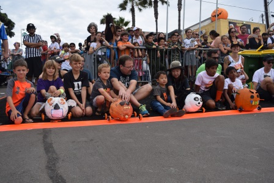

Each event that takes place in Manhattan Beach is broken down by the calendar month. There are some overlappings of events from month to month. Not all of events are on this list, the events listed are the ones that happen every year.
SIDEWALK SALE: Stores have major sales and put some of their merchandise along the sidewalks.
REOCCURRING TUESDAY FARMER'S MARKET: On every tuesday of the year local vendors come out and provide produce for the Farmer's market every single Tuesday.
ICE SKATING RINK: A local skating rink for people to experience a taste of winter in an area that is sunny year round.

SUPER BOWL WATCH PARTIES AT BARS: Various bars in the downtown area will have their televisions on and turned to the Super Bowl.
LOCAL 5K: Elementary schools in the area will host 5Ks to support the schools.
ST. PATRICK'S DAY BAR CRAWL: Locals will bounce around from pub to pub and enjoy the holiday in fashion.
MANHATTAN BEACH LITTLE LEAGUE OPENING DAY PARADE: The city closes the main streets to support the kids athletic teams and their accomplishments to kick off the new season.
ELEMENTARY SCHOOL FAMILY FUN RUN: Elementary schools in the area will host 5Ks to support the schools.
EASTER BUNNY EGG HUNT: Different Easter eggs are placed around ton with clues on where to find them for kids.
SIDEWALK SALES: Stores have major sales and put some of their merchandise along the sidewalks.
ELEMENTARY SCHOOL 5K: Elementary schools in the area will host 5Ks to support the schools.
KENTUCKY DERBY PARTY: A major watch party with gambling to support the Kentucky Derby.
TOUR DE PIER FUNDRAISER: A spinning fundraiser for local organizations.
WINE AUCTION: An auction to support the community's schools.
SUMMER BEACH CAMPS: These camps run throughout the summer and a re a fun way to keep kids busy and become more comfortable at the beach.

FOURTH OF JULY FESTIVITIES: Local restaurants prepare for the holiday's festivities and the beaches are packed with people and exciting events.
JUNIOR LIFEGUARDS: This gives a chances for kids from the ages of 8-17 to become more comfortable in the ocean. They learn to navigate the waters and learn safety beach practices and train to be junior lifeguards.
USA BEACH VOLLEYBALL TOURNAMENT: Professional beach volleyball players go head to head in one of the most prominent tournaments of the sport.
GRAND PRIX: A local bike race around town for competitive bikers.

SIX MAN BEACH VOLLEYBALL TOURNAMENT: A fun local volleyball tournament for amateurs to dress up and play some beach volleyball.
INTERNATIONAL SURF FESTIVITIES: Involves various beach competitions including a swim from one pier to the other, a surf competition and a sand castle building contest.
AVP BEACH VOLLEYBALL TOURNAMENT: A beach volleyball tournament where professionals come out to play head to head against one another, in the past, Olympians have played in this tournament.
CATALINA CLASSIC PADDLE COMPETITION: Paddle competition that starts in Manhattan Beach and ends at the infamous Catalina Island.
SIDEWALK SALES: Stores have major sales and put some of their merchandise along the sidewalks.
DOWNTOWN CAR SHOW: An opportunity for people to show off their retro cars and locals to enjoy the view.

HOMETOWN FAIR: Local organizations come together to create boothes and all of the profits go directly to the city organizations.
MANHATTAN BEACH 10K RUN: Coinciding with the Hometown Fair, this is a 5k for locals to show support for their organizations.
SKETCHERS FRIENDSHIP WALK: A walk founded by Sketchers to promote friendshi everywhere from one pier to the other.
PUMPKIN RACES/TRICK OR TREATING: Kids decorate pumpkins of all shapes and sizes and then send them rolling down a steep hill in a competition to see who will win.
HOLIDAY OPEN HOUSES: Every year the stores open up their doors at really late hours to help the city invitie people to come celebrate the start of the holiday season and the lighting of all the decorations.
FIREWORKS NIGHT: Every year, the city launches fireworks from the pier to ring in the end of the year and welcome the new one with friends and family.
HOLIDAY BAR CRAWL: A bar crawl across all of the local pubs for people to ring in the holiday season.
HOLIDAY COOKIE DECORATING FOR KIDS: A cookie decorating competition for kids to show off their decorating skills.